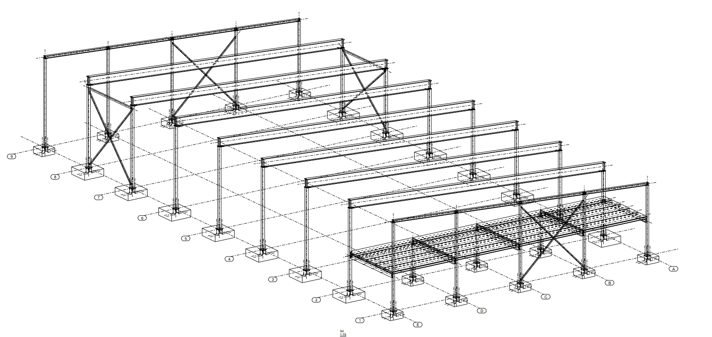
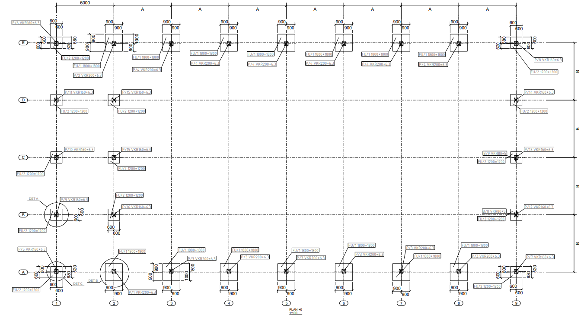
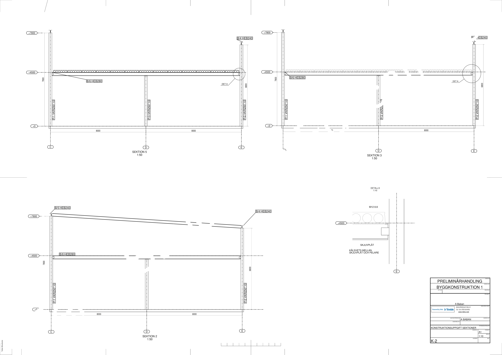
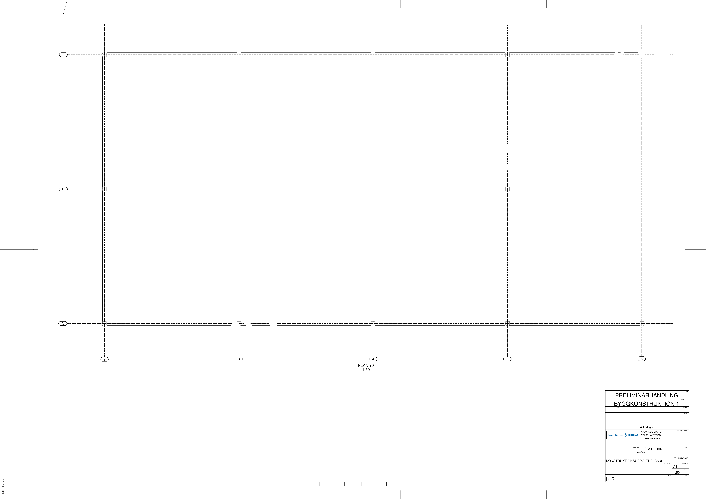
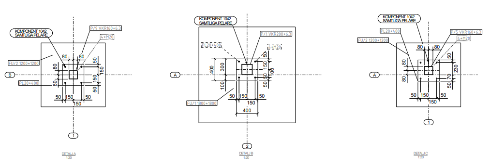

01
Stålstomme för Industribyggnad
Tekla Structures · Konstruktion · Dimensionering
I detta projekt dimensionerades en bärande stålstomme för en industribyggnad med 8,0 meters spännvidder. Arbetet omfattade lastberäkningar, dimensionering av takbalkar, bjälklagsbalkar, pelare och förband samt framtagning av konstruktionsritningar i Tekla Structures.
TakbalkHEB 240
BjälklagsbalkHEB 280
PelareVKR 250×250×10
Förband6 × M12 8.8
Dimensioneringskontroll
MEd ≤ Mpl,Rd → 623,2 kNm ≤ 663,9 kNm → OK
Förbandets utformning: 6 st M12 8.8-skruvar, 10 mm plåt och kälsvets. VKR 250×10 ger homogen materialstruktur, obetydliga restspänningar, inga svetsbegränsningar i hörnen samt formstabilitet vid svetsning och varmgalvanisering.




